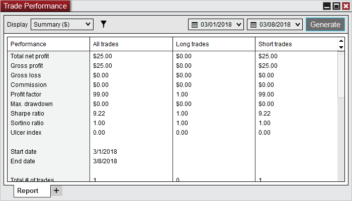
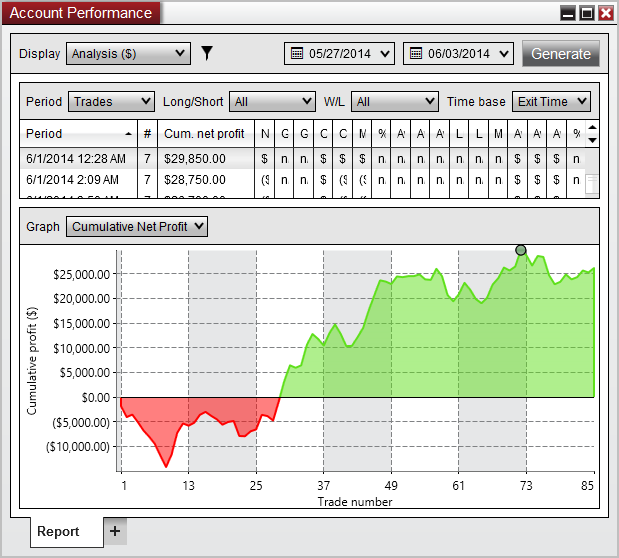
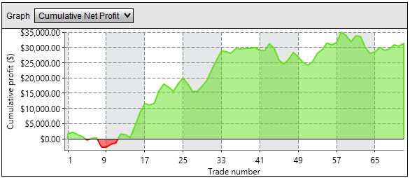
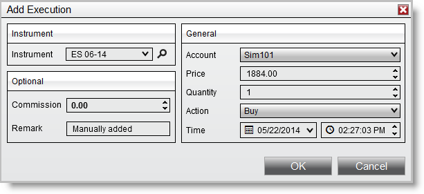

|
<< Click to Display Table of Contents >> Performance Displays |


|
Performance Displays
|
<< Click to Display Table of Contents >> Performance Displays |
|
The Account Performance window displays performance data in a variety of ways.
 Understanding the Summary display
Understanding the Summary display
Summary DisplayDisplays all performance statistics and metrics.

Please see the Statistic Definition section of the help guide for details on how each statistic is calculated.
|
 Understanding the Analysis display
Understanding the Analysis display
Analysis DisplayDisplays data based on various time periods for analysis.

Analysis view displays both a grid of data in the selected period format and a graph that you choose to display based on the period data. It allows an easy way to see trends in the data set and make correlations.
Period GridThe period grid has options that let you select what data to display, note that the data in the grid drives the data shown in the selected graph type below.
GraphThe graph displays data from the period grid above.

You can select what data you would like to view from the Graph selection combo box. As you move your mouse over the Graph a dot will be displayed indicating that it is a data point. Left clicking on the data point will select it and also select the same data in the Period Grid above the Graph.
Available Graph Types
•Cumulative Net Profit •Net Profit •Cumulative Max. Drawdown •Avg. MAE •Avg. MFE •Avg. Entry Efficiency •Avg. Exit Efficiency •Avg. Total Efficiency
Please see the Statistic Definition section of the help guide for details on how each graph type is calculated.
|
 Understanding the Executions display
Understanding the Executions display
Executions DisplayThe Executions display shows all historical executions in a data grid. The columns listed in the data grid use the same layout you would see from the Executions Tab of the Control Center. For definitions of each column, please see the Understanding the executions tab section.
Charting ExecutionsYou can go to the exact chart location of an execution by doing the following:
1.Select the execution 2.Right mouse click and select the menu item Chart.
NinjaTrader will open a temporary chart to the location of the execution
Adding ExecutionsThere may be situations where you will want to manually add or remove an historical execution. Historical executions are used to generate performance data in the Account Performance window. If an execution is missing, the performance data will be incorrect. This could happen since not all brokers provide historical execution. Let's say you placed a good till cancelled (GTC) order on Monday, did not connect on Tuesday at which time your order filled, then connected NinjaTrader on Wednesday, NinjaTrader would never receive the execution report for Tuesday's order fill. You would then have to add this historical execution to the database if you want your performance reporting to be accurate.
To add an execution to the database:
1.Right mouse click in the Executions display and select the Add... menu item. The Add Execution window appears. 2.Input your desired execution parameter values in the image below 3.Press the OK button
The execution is now added to the database and will be used in performance reporting.

Removing ExecutionsYou can also remove an execution by right mouse clicking the execution you wish to delete and selecting "Remove". |
 Understanding the Trades display
Understanding the Trades display
Trades DisplayThe Trades display shows all historical executions in a data grid. A Trade defined is a completed buy/sell or sell/buy transaction sorted by time and matched by the market position and quantity of the execution. Positions which have been scaled in or scaled out will be considered as separate trades.
Charting TradesYou can go to the exact chart location of an trade by doing the following:
1.Select the trade 2.Right mouse click and select the menu item Chart.
NinjaTrader will open a temporary chart to the location of the trade.
|
 Understanding the Orders display
Understanding the Orders display
Orders DisplayThe Orders display shows all historical orders in a data grid. |
 Understanding the Journal display
Understanding the Journal display
Journal DisplayThe Journal tab is only visible in the Account Performance window. The Journal tab allows you to keep journal entries on your trading activities. Enter your comments in the text area and press "add". The data grid will display your journal entries by date.
|